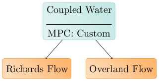
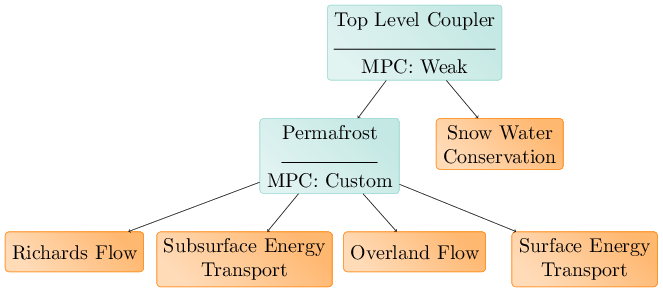
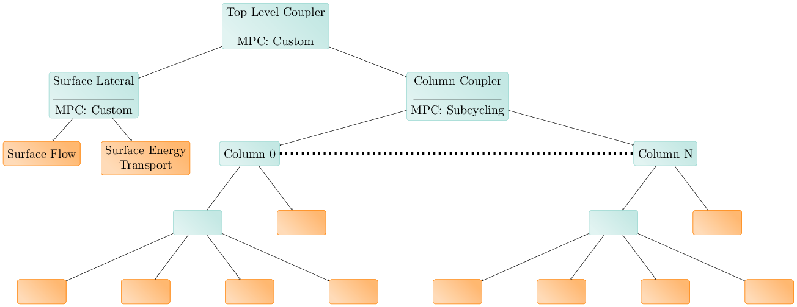

Process Kernels#
If evaluators provide 75% of ATS physics code, Process Kernels provide the other 25%. Process Kernels, or PKs for short, represent a single, or set of coupled partial differential equations, and must implement a shared API, or application programming interface, which defines what it means to be a PK. Things that a PK must be able to do include setting up the required data, initializing that data, advancing a single timestep, recovering if itself or another PK fails to advance, and commiting that step once all PKs are successful.
Physical PKs#
A single equation PK typically represents conservation of some quantity on a single domain. Such PKs are called Physical PKs, as opposed to MPCs which may exist across multiple domains. A physical PK typically uses things like discretizations of differential operators (e.g. the divergence of a gradient field), initial conditions, boundary conditions, time integration routines to advance the step, and linear and nonlinear solvers to solve time integration in the case of implicit methods. Each of these may actually be implemented in a separate class as a part of Amanzi’s mathematics libraries, but the PK is responsible for collecting each of these parts together to form the process.
Examples of physical PKs include Richards equation in the subsurface, energy transport within a stream, and snow water conservation in the snowpack.
Multi-Process Coordinators#
Coupling multiple PKs together to form a system of coupled equations is done by a Multi-Process Coupler, or MPC. MPCs are themselves PKs (they implement the required interface). Since MPCs are PKs, MPCs may couple other MPCs heirarchically. Amanzi-ATS provides both generic and specific MPCs. One example of a generic MPC includes the weak MPC, which simply advances one PK after another, lagging the coupling terms. Another is the strong MPC, which treats coupling terms implicitly, and solves the coupled system in a single nonlinear solve, leveraging a block-diagonal preconditioner. Examples of specific MPCs include the coupled water MPC, which strongly couples overland flow and subsurface flow by injecting the overland flow equation into the subsurface flow equation as a nonlinear boundary condition, discretely.
We describe PKs and MPCs using a tree structure, called the PK tree. Even a single PK alone is a valid PK tree, but a non-trivial PK tree is shown below:
Here physical PKs are shown in blue, while MPCs are shown in brown. Each Physical PK is a leaf of the tree, while each MPC is an internal node. As MPCs implement the PK interface and are themselves PKs, MPCs may couple other MPCs. An example of this is shown below:
Here, Surface and subsurface flow and energy transport are coupled by a special purpose strong coupler. This coupler is itself coupled weakly to a snow PK, which provides a source of water to the overland flow PK. This is colloquially called ATS’s permafrost model.
Finally, MPCs may coupled an arbitrary, runtime-determined number of PKs, as is the case for domain sets:
In this case, each domain in the domain set is a column, and the permafrost model is used on each column. The columns are coupled together through overland flow and energy transport. This model is based on the assumption that subsurface lateral flow is small and unimportant relative to both overland lateral flow and vertical flow and energy transport.